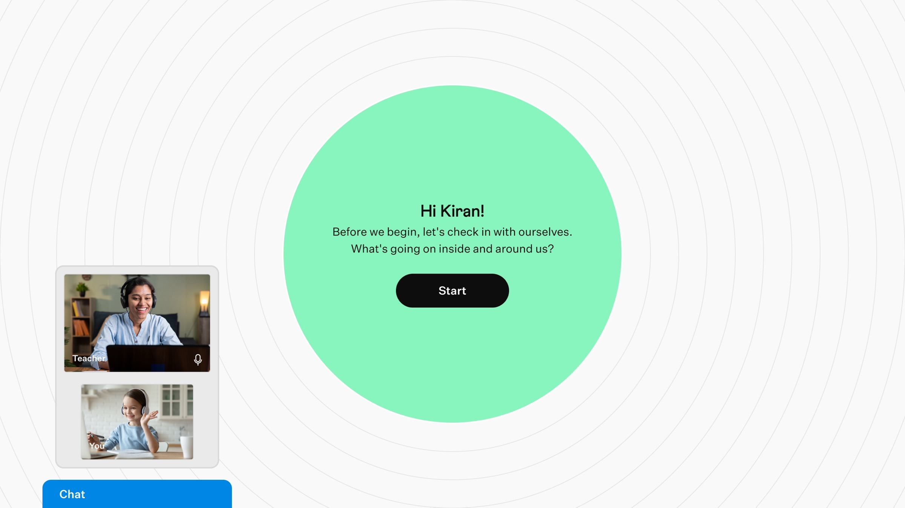
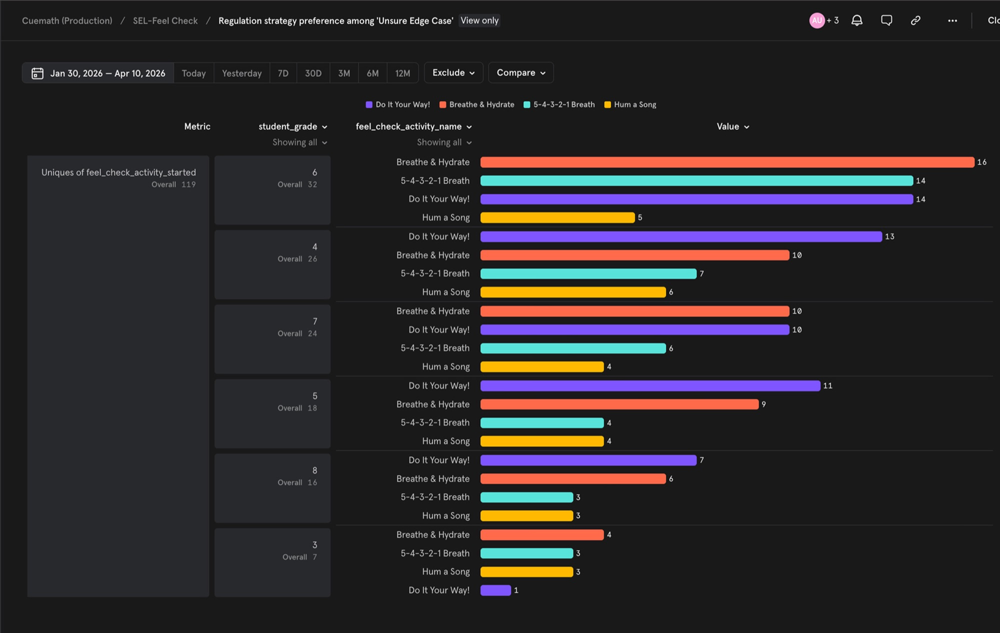
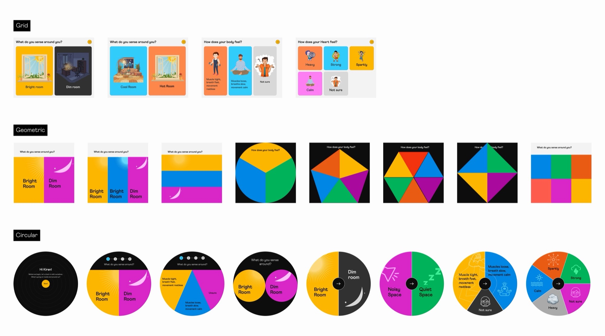
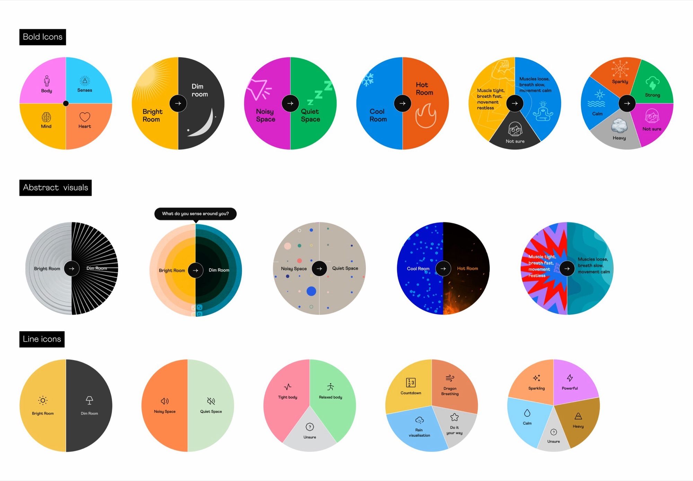
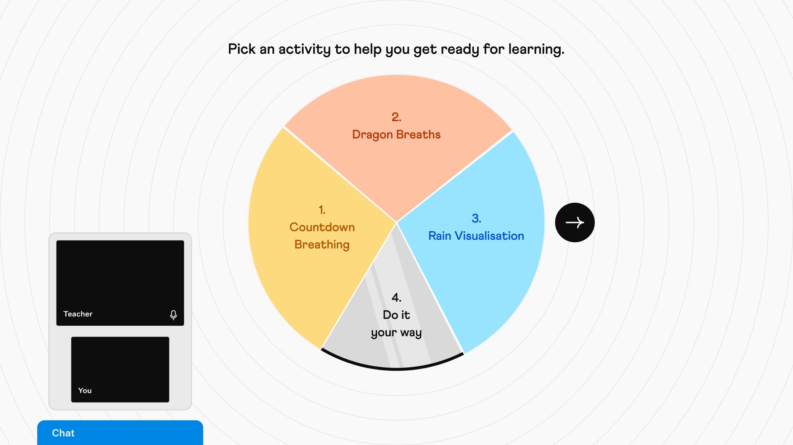
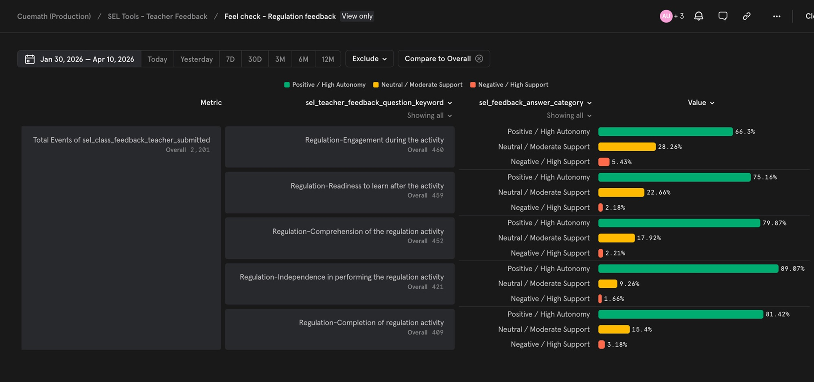
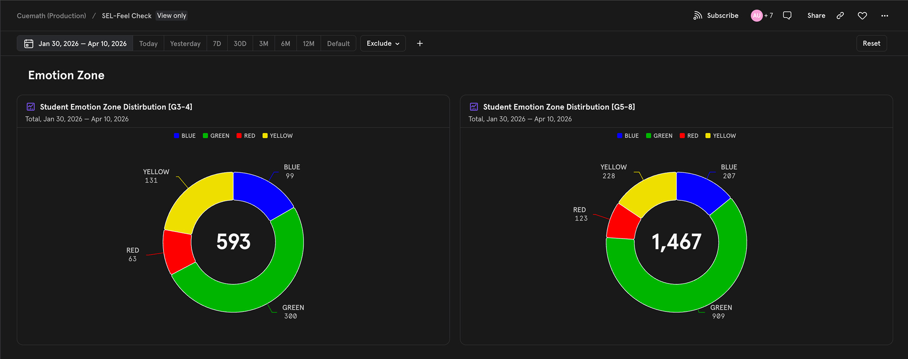

Cuemath's tutors couldn't see how students arrived emotionally — and the first 15–20 minutes of a 50-minute class went to settling them, not teaching. I designed Feel Check: a student-led check-in that helps students recognize how they're feeling, name the emotion, and choose a way to regulate — all before class begins.
15–20 min
Before Feel Check: time lost to settling per 50-min class.
75.2%
Tutors observed students were ready to learn after Feel Check. (n=459)
89.1%
Tutors observed students worked independently through the regulation activity. (n=421)

Feel Check moves students through four steps of self-check — Senses, Body, Heart, Mind — surfaces a feeling, and routes them to a short activity to regulate.
Open in Figma →Tutors couldn't see how students arrived emotionally — and 15-20 min of every 50 min class went to settling instead of teaching.
When a student arrived stressed, tired, or distracted, the tutor had no way of knowing. Stress, fatigue, or distraction would surface mid-class — and by the time the tutor caught it, half the session was gone.
Class-recording reviews and ongoing tutor feedback showed it consistently: the student's state was a constant; the tutor's response wasn't. There was no standard, and no tool. A session delivering barely half its time to instruction isn't the product Cuemath promised — weaker sessions meant weaker progress.
End-to-end design: Cuemath's most complex Social Emotional Learning (SEL) tool, designed for Grades 3-8, from clinical spec to four-phase rollout.
The spec set the bones — frameworks, sequence, and routing. The challenge was designing the experience within the allotted 5 minutes: how a child would move through it.
Decision 1 — Make Unsure a state, not a fallback
The spec had a "Skip" button at Body, Heart, and Mind. It let a kid bypass the question. After researching with multiple users, I concluded Skip was the wrong frame: Unsure should hold a place as an option, not a fallback. Skip treats uncertainty as something to bypass — but uncertainty IS a state, and RULER needs that state to read.
But the spec still required students to name an emotion even after three Unsures. Asking a child to name an emotion when they truly don't know isn't a check-in — it's a forced answer. The team agreed: when all three Unsures stack, the flow skips emotion-naming and routes to a curated set of activities — meant for "I don't know," not skipped.
| Body | Heart | Mind | Routes to |
|---|---|---|---|
| Tight, fast breath | Heavy | Few thoughts | Blue zone |
| Relaxed, slow breath | Sparkling | Full of thoughts | Yellow zone |
| Tight, fast breath | Powerful | Full of thoughts | Red zone |
| Unsure | Calm | Few thoughts | Green zone |
| Unsure | Heavy | Unsure | Blue zone |
| Unsure | Unsure | Unsure | Curated regulation set |
Body × Heart × Mind → Zone. All Unsure (highlighted): curated set — the case the spec missed.
1 in 5 students selected Unsure at the Body stage — the hardest to name. 254 sessions reached the all-Unsure path; 119 unique students completed an activity from there — no dead end.
Unsure rates per stage by grade band. Body the hardest to name (G3–4: 23.5%, G5–8: 20.1%).

What the 119 all-Unsure students picked, by grade. They engaged with the activities.
Decision 2 — Keep the wheel continuous from check-in to regulation
The spec called for a "four-quadrant wheel" with sequential activation. The rest was mine. The wheel had to stay continuous — same shape, same metaphor, from check-in through regulation activity. Any shift in form would cost seconds in a 5-minute flow.
I tested grids, modal sequences, and full-screen flows; the circular form held the framework intact. Within that shape, I tried atmospheres, bold icons, and line icons; line icons were clearest. Animation pushed to v2.

Early ideation — bringing the Wheel of Awareness to a screen.

Visual styles I tried — atmospheres, bold icons, line icons (picked).
In testing, students moved through all four stages without asking where to click — the shape showed them.

Regulation menu uses the same wheel — framework stays continuous.
Decision 3 — Replace clinical vocabulary with words children actually use
The spec used clinical labels — "Sparkling," "Affirmation," "Set Intention." I doubted they'd land for kids, but Roots was the clinical authority and the team deferred. When I monitored in-house recordings, the doubt held — students hesitated, asked what they meant, or skipped. Vocabulary is interaction. I asked for the change. Direct synonyms ("Sparkling" → "Joyful") still felt adult. We rewrote in child-natural language ("Affirmation" → "Get Ready!", "Set Intention" → "Set a Goal!") and took the wording back to Roots for sign-off. After rollout, tutors stopped flagging confusion.
Vocabulary varied by age: Grade 3-4 used 4 simpler emotions; Grade 5-8 used 6 more complex. (Why metrics split by band.)
Specific emotions per zone. The rewritten vocabulary held in practice.
Decision 4 — Audio was structural, not decorative
The first version shipped without background audio — a scope trade-off (26 unique tracks across both bands weren't shippable in v1). I had reservations about visuals alone carrying the regulation.
I observed the in-house sessions myself. Regulation was mandatory (no skipping); students had two options — engage and finish, or stall. Most stalled. Phase 1 averaged 2.9 minutes of empty screen time.
I reviewed 24 recordings, spotted the stalling pattern, and proposed shared ambient tracks across similar activities. Shipped before rollout.
Audio strategy
No audio (v1)
Visuals stalled students. Phase 1: 2.9 min empty.
Unique track per activity
26 unique tracks. Not shippable in v1.
Shared ambient tracks
Grouped similar activities. Regulation: 1.9 min.
Across Phases 2–4, regulation dropped to 1.9 min; reattempt held at 14%. Not disengagement — the audio pulled students in. The sensory layer is the work.
Rain Visualisation — one of 26 regulation activities.
Ready to learn
75.2%
of students were ready to learn after Feel Check (n=459, tutor-observed).
Worked independently
89.1%
Students completed regulation independently (n=421). Student-led design held.
Check-in duration
3.4 min
From start to learning-ready. Within the 5-minute spec.
Tutor feedback rate
96.3%
Averaging 4 sec per response. What makes every metric here trustworthy.

Tutor feedback across five regulation dimensions (2,201 responses). All rated positive / high autonomy.
49% of G3-4 sessions and 38% of G5-8 sessions arrived non-Green — the share Feel Check surfaced for regulation.

Zone distribution by grade band. Most arrived Green; meaningful share didn't.
Validated across 4 phases (Jan 30 – Apr 10, 2026): 2,060 sessions, 411 students, 120 tutors.
| Phase | Date | Tutors | Students |
|---|---|---|---|
| 1 (in-house) | 30 Jan | 7 | 14 |
| 2 | 24 Feb | 42 | 249 |
| 3 | 10 Mar | 62 | 102 |
| 4 | 31 Mar | 9 | 46 |
What we called a backup, kids made their favorite.
The spec listed "Do It Your Way" as a backup option. Students made it their top pick across all four zones. By keeping all 4 regulation activities open after first use, kids could pick their own way — and they did.
Kids came back for more — even when they didn't have to.
After kids learned the flow, 1 in 4 still chose "try one more" after finishing their first regulation activity. The activity meant to settle them became something they wanted to do again.
Cutting audio was a mistake. I caught and fixed it.
We cut audio from the first version — making unique sounds for 26 activities across two grade bands wasn't possible in the timeline. Phase 1 kids stalled (2.9 min of empty screens). I watched class recordings and proposed grouped ambient sounds. Regulation dropped to 1.9 min. When a team cut hits the user side, finding a workable alternative is the job.
I measured "ready to learn." I didn't measure if they actually learned.
Feel Check did what it was built to do — kids arrived more ready for class. We believed that would mean better focus and stronger learning. But measuring whether they actually learned more wasn't the main goal, and I didn't push for a way to check it. Whether Feel Check moved that longer arc — that's the question I still think about.